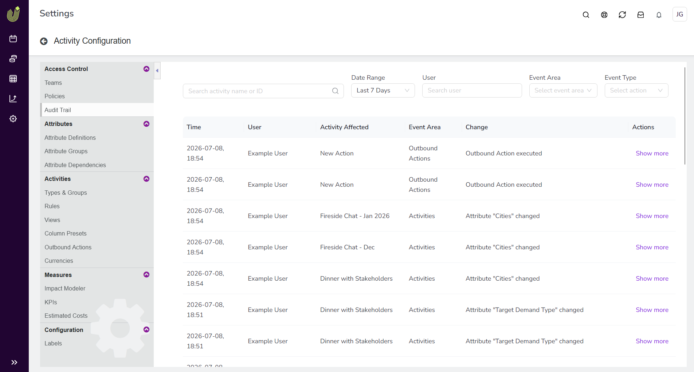

What's new: 2026.7
Discover all the new Uptempo features introduced with the 2026.7 release, available from July 29, 2026.
Campaign Management: Activity Configuration
View a centralized audit trail for activities
Campaign Management admins can now view a centralized audit trail of all activity changes directly in Uptempo.
Track every change: See exactly which activities changed, which data points were updated, when the change occurred, and who made it. Changes to different areas of an activity, such as Estimated Costs, connected funds, and KPIs, are recorded as separate entries.
Access logs on demand: Review the logs at any time from Activity Configuration in Campaign Management — no need to make a request to Uptempo Support.
Find records faster: Search and filter the log to locate specific changes by activity name or ID, date range, user, and the area and type of change.
View change details: Select Show more on any entry to compare the Old value and New value for that change.
{kind=link}

→ Learn more about the Campaign Management audit trail
Create attribute dependencies across activity hierarchy levels
You can now set up attribute dependencies that span multiple levels of the activity hierarchy, where one attribute controls another attribute on a different, lower-level activity.
Streamline data entry across levels: You no longer need to force high-level attributes down to lower levels of the hierarchy to use attribute dependencies. For example, you can now configure a dependency where users set the Country attribute on a parent activity, and the State attribute on all child activities is automatically filtered to the relevant options.
Reduce manual effort and input errors: Users now only need to set a controlling attribute once on the parent activity, instead of on every child activity. Eliminating these repeated selections lowers user workload, and reduces the risk of input errors.
Prevent accidental data loss: If a user attempts to change the value of the controlling attribute in a multi-level dependency, the system now displays a warning that the change may remove existing data in any dependent attributes.

Campaign Management: Activities
Filter activities by their creator
You can now filter activities by the user who created them in the Timeline and Summary display modes, making it easier to find the activities you or your team own.
Find relevant activities faster: Use the Created by filter option in the
 Filter Activities menu to show only activities creates by specific users.
Filter Activities menu to show only activities creates by specific users.Supported conditions: Filter using is or is one of to target one or more creators.
UX enhancements to prevent accidental changes to in-market dates
We've made some tweaks to activity bars in the Timeline display mode to help prevent accidental changes to in-market dates by dragging the activity bars.
Check basic details from the Timeline: Hold the pointer over a Timeline activity bar to display a tooltip with the activity name and its in-market dates, so you can review an activity without risking an accidental edit.
Read activity names more easily: When a bar is too narrow to fit the activity's name, the name now appears as a label directly next to the bar, so users no longer need to drag the bar to make it wider to view the full name — unintentionally changing the in-market dates as a result.
Compare Estimated Costs and connected spend in a single table
You can now view Estimated Costs and connected investment data together in one table on an activity, making it easier to compare planned budget against actual spend across multiple years.
Analyze variance without toggling: Compare Estimated Costs and connected investment amounts side-by-side in a single table in the Budget section of an activity's details, instead of switching between two separate tables and mapping the values yourself.
Work across multiple years: Use a single control to change the year in view, rather than selecting the same year separately on two tables.
Create financial items directly from an activity
You can now create and connect a new financial item from the activity view when the funding source you need doesn't yet exist in the investment hierarchy.
Plan without switching context: When you connect an activity to funding, create a new line item directly from the investment picker, instead of leaving the activity to build the item in the investment hierarchy first.
Reduce planning friction: Complete your budgeting and linking in one place, which keeps your focus on planning and speeds up work for large hierarchies and frequent planning cycles.
Financial Management: Budgets
Sync carryover spend items automatically after a rollover
After an annual rollover, you can now sync late-year and newly created spend items into the new fiscal year automatically, without manually rebuilding data mappings.
Rely on Persistent IDs, not names: Uptempo assigns Persistent IDs to budgets, columns, and column choices, so your data mappings survive year-over-year name changes. For example, a column choice that changes from United States to US Top Market still maps correctly.
Simplify carryover uploads: Upload a simplified CSV that contains only the line item ID. A destination investment plan ID is optional, and only needed when you created a new budget in the new hierarchy.
Automate routing and mapping: Uptempo reads the Persistent IDs to route each line item to the correct destination budget, and maps old data to the new fields regardless of any text-based name changes in the new fiscal year.
Update Persistent IDs through the API: Create or update Persistent IDs for existing items and integrations, either individually or in bulk.
→ Learn more about Persistent IDs in Uptempo Financial Management
Invite users to budgets by their permissions role
In Uptempo 1.0 instances, administrators can now invite users to the financial hierarchy using permissions roles, making it easier to manage access to Uptempo Financial Management at scale directly from your existing user management system.
Grant access by role: Instead of inviting individual users to the budget hierarchy, you can now invite any permissions role in the Budget module (under Administration > Permissions > Budget) to easily grant access to all users assigned to that role.
Automate access via SSO: To simplify large-scale user management, you can link your SSO groups directly to specific Budget module roles. This allows you to manage access to Uptempo Financial Management centrally through your organization's user management system.
Configure role mappings: When you invite a permissions role to a budget, you can conveniently grant the appropriate access level to Financial Management by assigning a corresponding user role, such as Editor or Viewer.

→ Learn more about inviting users to Uptempo Financial Management budgets
Uptempo API
New Uptempo API documentation
The brand new Uptempo API documentation site is now available, providing an Uptempo-branded reference for the same endpoints available today, with improved navigation and in-browser testing.
Uptempo-branded experience: The new site replaces the Allocadia-branded documentation with modern Uptempo styling and improved navigation to help you find the information you need faster.
Test endpoints in the browser: Try any endpoint directly from the documentation to explore requests and responses, without a separate API client.
Built on a new OpenAPI spec: The documentation is generated from a new OpenAPI specification. Export the OpenAPI spec in JSON or YAML format to generate client code, import the API into your own tooling, or set up automated testing.
Transition at your own pace: Both documentation sites remain available for now, and the existing Allocadia API docs remain up-to-date.
Access the Uptempo API using uptempo.io URLs
The Uptempo API now supports uptempo.io URLs alongside the existing allocadia.com URLs, so you can align your integrations with the Uptempo domain. The API accepts both uptempo.io and allocadia.com URLs interchangeably, so your existing integrations continue to work while you migrate.
IP Allowlist extended to API requests
Your Uptempo IP Allowlist now covers access through the public API, so requests to your Uptempo instance through the API are also restricted to your approved networks.
Protect API access: Restrict API access to your Uptempo instance to the same approved IPv4 addresses, IPv6 addresses, and CIDR ranges that you define in your IP Allowlist. Requests from networks outside the allowlist are blocked.
Support strict compliance requirements: You can now apply consistent network-level access controls across both the Uptempo application and the API to meet security and compliance requirements in regulated industries.